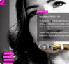
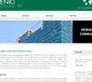

Diogo Osório
- Foi um dos sócios fundadores da Zoinke, Lda
- Frequenta o curso de Informática e Gestão de Empresas
- É apaixonado por desenvolver para a Web
- Vive em Lisboa
- 
- 

A Carregar...
Convidou-o a marcar uma entrevista de trabalho com ele.
A Carregar...